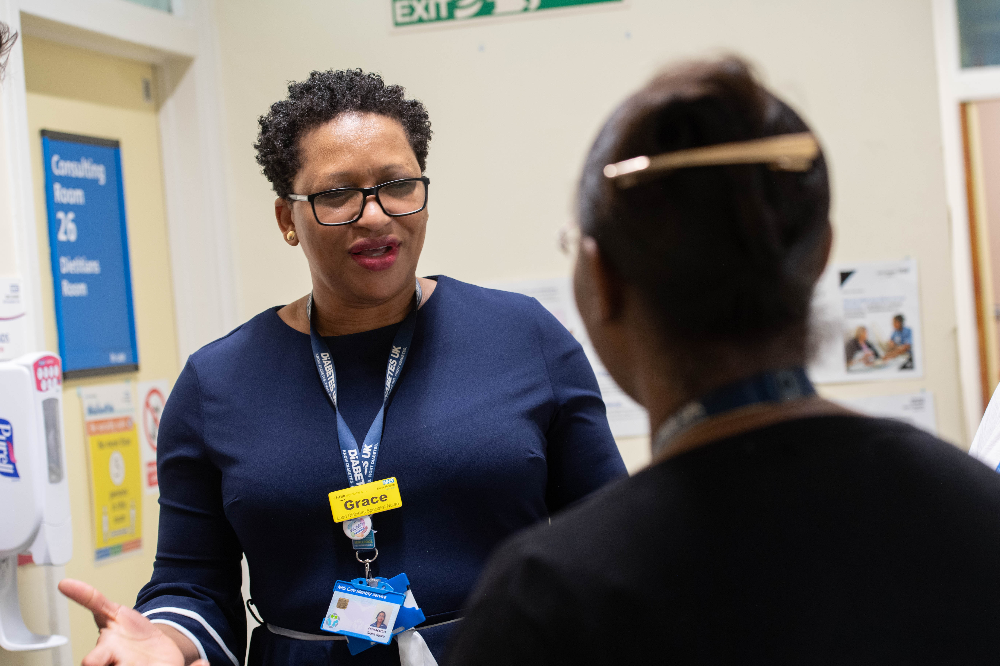

Management referrals
Independent occupational health assessments for managers who have concerns about an employee's health, wellbeing or fitness for work.

We help your organisation understand and manage your employees' physical and mental health, as well as proactively manage sickness issues.
Our servicesIn today's fast-paced and demanding work environment, employees often face a range of health risks and challenges. From physical injuries to mental health issues, the wellbeing of your workforce can significantly affect productivity and the overall success of your organisation.
We know that when staff are happy and healthy, they are more productive and their working lives are generally better.


Our occupational health service offers a wide range of support to help your organisation understand and manage employees' physical and mental health, as well as sickness absence.
We help prevent work-related health issues and carry out assessments to understand how an employee's health may affect their work.
Our service is delivered by a dedicated team of highly qualified and experienced doctors, nurses, physiotherapists and administrative staff.
Independent occupational health assessments for managers who have concerns about an employee's health, wellbeing or fitness for work.
Support for employees whose health is affecting their work, attendance or safety. We work with the employee, manager and HR team to identify a practical outcome.
Assessments to confirm whether an employee is medically fit for a new role and identify any reasonable workplace adjustments or immunisations they may require.
Specialist guidance following a needlestick or sharps injury, including advice about possible exposure to hepatitis B, hepatitis C and HIV.
Advice for employers whose workers use, handle or may encounter used sharps, helping them reduce exposure risks and prevent avoidable injuries.
Ongoing monitoring for employees who remain exposed to workplace health risks, helping employers meet legal requirements and identify signs of ill health early.
Health assessments that help protect employees and determine whether existing workplace safety measures and controls remain effective.
Occupational immunisation services that help employers protect staff from infectious diseases and meet their responsibilities under health and safety and COSHH legislation.
Speak to our team to discuss your organisation's occupational health requirements.